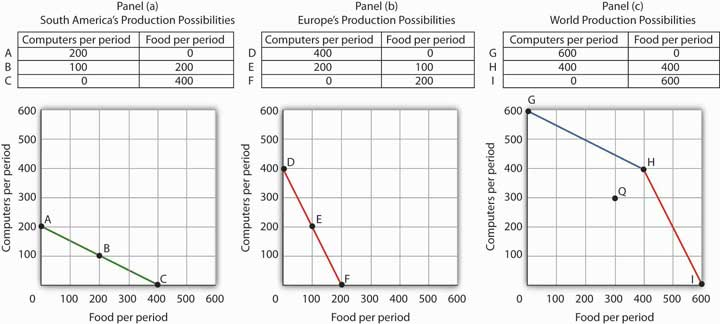
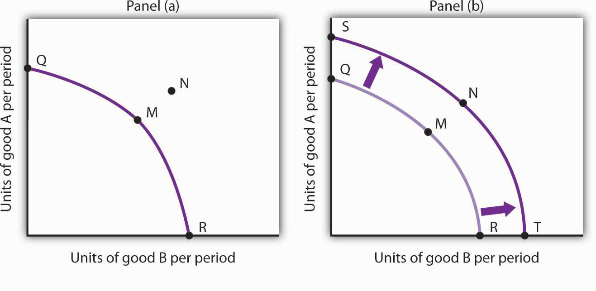
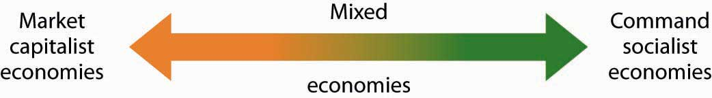
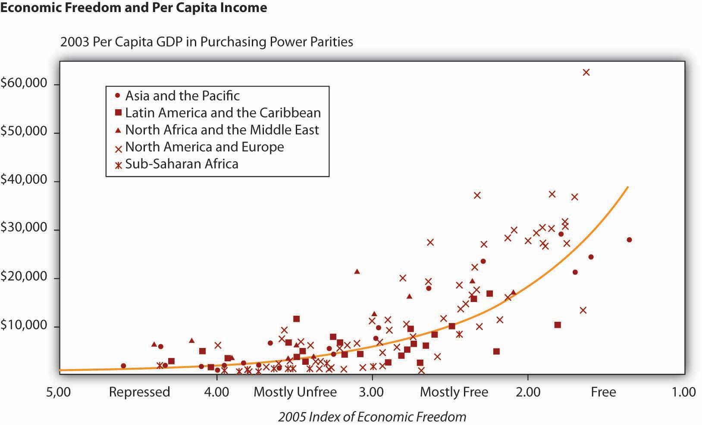
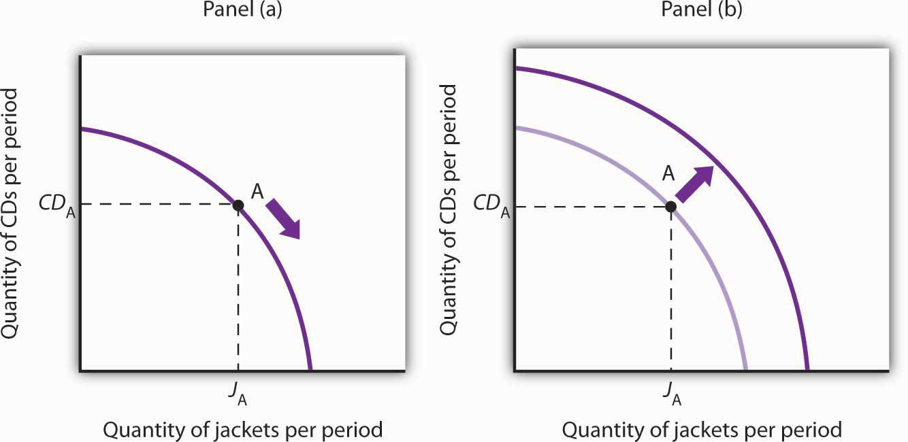

The production possibilities curve gives us a model of an economy. The model provides powerful insights about the real world, insights that help us to answer some important questions: How does trade between two countries affect the quantities of goods available to people? What determines the rate at which production will increase over time? What is the role of economic freedom in the economy? In this section we explore applications of the model to questions of international trade, economic growth, and the choice of an economic system.
One of the most important implications of the concepts of comparative advantage and the production possibilities curve relates to international trade. We can think of different nations as being equivalent to Christie Ryder’s plants. Each will have a comparative advantage in certain activities, and efficient world production requires that each nation specialize in those activities in which it has a comparative advantage. A failure to allocate resources in this way means that world production falls inside the production possibilities curve; more of each good could be produced by relying on comparative advantage.
If nations specialize, then they must rely on each other. They will sell the goods in which they specialize and purchase other goods from other nations. Suppose, for example, that the world consists of two continents that can each produce two goods: South America and Europe can produce food and computers. Suppose they can produce the two goods according to the tables in Panels (a) and (b) of Figure 2.12 "Production Possibilities Curves and Trade". We have simplified this example by assuming that each continent has a linear production possibilities curve; the curves are plotted below the tables in Panels (a) and (b). Each continent has a separate production possibilities curve; the two have been combined to illustrate a world production possibilities curve in Panel (c) of the exhibit.
Figure 2.12 Production Possibilities Curves and Trade
Suppose the world consists of two continents: South America and Europe. They can each produce two goods: food and computers. In this example, we assume that each continent has a linear production possibilities curve, as shown in Panels (a) and (b). South America has a comparative advantage in food production and Europe has a comparative advantage in computer production. With free trade, the world can operate on the bowed-out curve GHI, shown in Panel (c). If the continents refuse to trade, the world will operate inside its production possibilities curve. If, for example, each continent were to produce at the midpoint of its production possibilities curve, the world would produce 300 computers and 300 units of food per period at point Q. If each continent were to specialize in the good in which it has a comparative advantage, world production could move to a point such as H, with more of both goods produced.
The world production possibilities curve assumes that resources are allocated between computer and food production based on comparative advantage. Notice that, even with only two economies and the assumption of linear production possibilities curves for each, the combined curve still has a bowed-out shape. At point H, for example, South America specializes in food, while Europe produces only computers. World production equals 400 units of each good. In this situation, we would expect South America to export food to Europe while Europe exports computers to South America.
But suppose the regions refuse to trade; each insists on producing its own food and computers. Suppose further that each chooses to produce at the midpoint of its own production possibilities curve. South America produces 100 units of computers and 200 units of food per period, while Europe produces 200 units of computers and 100 units of food per period. World production thus totals 300 units of each good per period; the world operates at point Q in Figure 2.12 "Production Possibilities Curves and Trade". If the two continents were willing to move from isolation to trade, the world could achieve an increase in the production of both goods. Producing at point H requires no more resources, no more effort than production at Q. It does, however, require that the world’s resources be allocated on the basis of comparative advantage.
The implications of our model for trade are powerful indeed. First, we see that trade allows the production of more of all goods and services. Restrictions on trade thus reduce production of goods and services. Second, we see a lesson often missed in discussions of trade: a nation’s trade policy has nothing to do with its level of employment of its factors of production. In our example, when South America and Europe do not engage in trade and produce at the midpoints of each of their respective production possibilities curves, they each have full employment. With trade, the two nations still operate on their respective production possibilities curves: they each have full employment. Trade certainly redistributes employment in the two continents. In South America, employment shifts from computer production to food production. In Europe, it shifts from food production to computer production. Once the shift is made, though, there is no effect on employment in either continent.
Of course, this idealized example would have all of South America’s computer experts becoming farmers while all of Europe’s farmers become computer geeks! That is a bit much to swallow, but it is merely the result of assuming linear production possibilities curves and complete specialization. In the real world, production possibilities curves are concave, and the reallocation of resources required by trade is not nearly as dramatic. Still, free trade can require shifts in resources from one activity to another. These shifts produce enormous benefits, but they do not come without costs.
Nearly all economists agree that largely unrestricted trade between countries is desirable; restrictions on trade generally force the world to operate inside its production possibilities curve. In some cases restrictions on trade could be desirable, but in the main, free trade promotes greater production of goods and services for the world’s people. The role of international trade is explored in greater detail in subsequent chapters of this book.
An increase in the physical quantity or in the quality of factors of production available to an economy or a technological gain will allow the economy to produce more goods and services; it will shift the economy’s production possibilities curve outward. The process through which an economy achieves an outward shift in its production possibilities curve is called economic growthThe process through which an economy achieves an outward shift in its production possibilities curve.. An outward shift in a production possibilities curve is illustrated in Figure 2.13 "Economic Growth and the Production Possibilities Curve". In Panel (a), a point such as N is not attainable; it lies outside the production possibilities curve. Growth shifts the curve outward, as in Panel (b), making previously unattainable levels of production possible.
Figure 2.13 Economic Growth and the Production Possibilities Curve
An economy capable of producing two goods, A and B, is initially operating at point M on production possibilities curve OMR in Panel (a). Given this production possibilities curve, the economy could not produce a combination such as shown by point N, which lies outside the curve. An increase in the factors of production available to the economy would shift the curve outward to SNT, allowing the choice of a point such as N, at which more of both goods will be produced.
Economic growth implies an outward shift in an economy’s production possibilities curve. Recall that when we draw such a curve, we assume that the quantity and quality of the economy’s factors of production and its technology are unchanged. Changing these will shift the curve. Anything that increases the quantity or quality of the factors of production available to the economy or that improves the technology available to the economy contributes to economic growth.
Consider, for example, the dramatic gains in human capital that have occurred in the United States since the beginning of the past century. In 1900, about 3.5% of U.S. workers had completed a high school education. By 2006, that percentage rose almost to 92. Fewer than 1% of the workers in 1900 had graduated from college; as late as 1940 only 3.5% had graduated from college. By 2006, nearly 32% had graduated from college. In addition to being better educated, today’s workers have received more and better training on the job. They bring far more economically useful knowledge and skills to their work than did workers a century ago.
Moreover, the technological changes that have occurred within the past 100 years have greatly reduced the time and effort required to produce most goods and services. Automated production has become commonplace. Innovations in transportation (automobiles, trucks, and airplanes) have made the movement of goods and people cheaper and faster. A dizzying array of new materials is available for manufacturing. And the development of modern information technology—including computers, software, and communications equipment—that seemed to proceed at breathtaking pace especially during the final years of the last century and continuing to the present has transformed the way we live and work.
Look again at the technological changes of the last few years described in the Case in Point on advances in technology. Those examples of technological progress through applications of computer technology—from new ways of mapping oil deposits to new methods of milking cows—helped propel the United States and other economies to dramatic gains in the ability to produce goods and services. They have helped shift the countries’ production possibilities curve outward. They have helped fuel economic growth.
Table 2.1 "Sources of U.S. Economic Growth, 1948–2002" summarizes the factors that have contributed to U.S. economic growth in the past half century. When looking at the period of 1948–2002 as a whole we see that about 60% of economic growth stems from increases in the quantities of capital and labor and 40% from increases in the qualities of the factors of production and improvements in technology. In the most recent period, 1995–2002, however, these percentages are essentially reversed, with a little less than 30% explained by increases in quantities of the factors of production and a whopping 70% explained by improvements in factor quality and technology.
Table 2.1 Sources of U.S. Economic Growth, 1948–2002
| Year | Percentage contribution to growth | Period growth rate |
|---|---|---|
| Years 1948–2002 | 3.46% | |
| Increase in quantity of labor | 21% | |
| Increase in quantity of capital | 41% | |
| Increase in quality of labor | 10% | |
| Increase in quality of capital | 20% | |
| Improved technology | 25% | |
| Years 1948–1973 | 3.99% | |
| Increase in quantity of labor | 15% | |
| Increase in quantity of capital | 44% | |
| Increase in quality of labor | 11% | |
| Increase in quality of capital | 5% | |
| Improved technology | 25% | |
| Years 1973–1989 | 2.97% | |
| Increase in quantity of labor | 31% | |
| Increase in quantity of capital | 39% | |
| Increase in quality of labor | 7% | |
| Increase in quality of capital | 12% | |
| Improved technology | 10% | |
| Years 1989–1995 | 2.43% | |
| Increase in quantity of labor | 26% | |
| Increase in quantity of capital | 33% | |
| Increase in quality of labor | 15% | |
| Increase in quality of capital | 17% | |
| Improved technology | 11% | |
| Years 1995–2002 | 3.59% | |
| Increase in quantity of labor | 19% | |
| Increase in quantity of capital | 8% | |
| Increase in quality of labor | 5% | |
| Increase in quality of capital | 47% | |
| Improved technology | 20% | |
Total output during the period shown increased sixfold. The chart shows the percentage of this increase accounted for by increases in the quantity of labor and of capital and by increases in the quality of labor and of capital and improvements in technology. In the 1995–2002 period, the incorporation of information technology led to improvements in the quality of capital and technology that greatly contributed to growth.
Source: Based on Dale W. Jorgenson, “Accounting for Growth in the Information Age,” Handbook of Economic Growth, Phillipe Aghion and Steven Durlauf, eds. Amsterdam: North Holland, 2005.
Another way of looking at these data for the most recent period is to notice that the increase in the rate of economic growth between the 1989 to 1995 period and the 1995 to 2002 period of more than one percentage point per year is largely explained by better-quality capital and better technology. The study by economist Dale Jorgenson on which the data shown in Table 2.1 "Sources of U.S. Economic Growth, 1948–2002" are derived notes that these two main contributors to higher economic growth can be largely attributed to the development of information technology and its incorporation in the workplace.
One key to growth is, in effect, the willingness to wait, to postpone current consumption in order to enhance future productive capability. When Stone Age people fashioned the first tools, they were spending time building capital rather than engaging in consumption. They delayed current consumption to enhance their future consumption; the tools they made would make them more productive in the future.
Resources society could have used to produce consumer goods are being used to produce new capital goods and new knowledge for production instead—all to enhance future production. An even more important source of growth in many nations has been increased human capital. Increases in human capital often require the postponement of consumption. If you are a college student, you are engaged in precisely this effort. You are devoting time to study that could have been spent working, earning income, and thus engaging in a higher level of consumption. If you are like most students, you are making this choice to postpone consumption because you expect it will allow you to earn more income, and thus enjoy greater consumption, in the future.
Think of an economy as being able to produce two goods, capital and consumer goods (those destined for immediate use by consumers). By focusing on the production of consumer goods, the people in the economy will be able to enjoy a higher standard of living today. If they reduce their consumption—and their standard of living—today to enhance their ability to produce goods and services in the future, they will be able to shift their production possibilities curve outward. That may allow them to produce even more consumer goods. A decision for greater growth typically involves the sacrifice of present consumption.
Under what circumstances will a nation achieve efficiency in the use of its factors of production? The discussion above suggested that Christie Ryder would have an incentive to allocate her plants efficiently because by doing so she could achieve greater output of skis and snowboards than would be possible from inefficient production. But why would she want to produce more of these two goods—or of any goods? Why would decision makers throughout the economy want to achieve such efficiency?
Economists assume that privately owned firms seek to maximize their profits. The drive to maximize profits will lead firms such as Alpine Sports to allocate resources efficiently to gain as much production as possible from their factors of production. But whether firms will seek to maximize profits depends on the nature of the economic system within which they operate.
Each of the world’s economies can be viewed as operating somewhere on a spectrum between market capitalism and command socialism. In a market capitalist economyEconomy in which resources are generally owned by private individuals who have the power to make decisions about their use., resources are generally owned by private individuals who have the power to make decisions about their use. A market capitalist system is often referred to as a free enterprise economic system. In a command socialist economyEconomy in which government is the primary owner of capital and natural resources and has broad power to allocate the use of factors of production., the government is the primary owner of capital and natural resources and has broad power to allocate the use of factors of production. Between these two categories lie mixed economiesEconomy that combine elements of market capitalist and of command socialist economic systems. that combine elements of market capitalist and of command socialist economic systems.
No economy represents a pure case of either market capitalism or command socialism. To determine where an economy lies between these two types of systems, we evaluate the extent of government ownership of capital and natural resources and the degree to which government is involved in decisions about the use of factors of production.
Figure 2.14 "Economic Systems" suggests the spectrum of economic systems. Market capitalist economies lie toward the left end of this spectrum; command socialist economies appear toward the right. Mixed economies lie in between. The market capitalist end of the spectrum includes countries such as the United States, the United Kingdom, and Chile. Hong Kong, though now part of China, has a long history as a market capitalist economy and is generally regarded as operating at the market capitalist end of the spectrum. Countries at the command socialist end of the spectrum include North Korea and Cuba.
Figure 2.14 Economic Systems
Some European economies, such as France, Germany, and Sweden, have a sufficiently high degree of regulation that we consider them as operating more toward the center of the spectrum. Russia and China, which long operated at the command socialist end of the spectrum, can now be considered mixed economies. Most economies in Latin America once operated toward the right end of the spectrum. While their governments did not exercise the extensive ownership of capital and natural resources that are one characteristic of command socialist systems, their governments did impose extensive regulations. Many of these nations are in the process of carrying out economic reforms that will move them further in the direction of market capitalism.
The global shift toward market capitalist economic systems that occurred in the 1980s and 1990s was in large part the result of three important features of such economies. First, the emphasis on individual ownership and decision-making power has generally yielded greater individual freedom than has been available under command socialist or some more heavily regulated mixed economic systems that lie toward the command socialist end of the spectrum. People seeking political, religious, and economic freedom have thus gravitated toward market capitalism. Second, market economies are more likely than other systems to allocate resources on the basis of comparative advantage. They thus tend to generate higher levels of production and income than do other economic systems. Third, market capitalist-type systems appear to be the most conducive to entrepreneurial activity.
Suppose Christie Ryder had the same three plants we considered earlier in this chapter but was operating in a mixed economic system with extensive government regulation. In such a system, she might be prohibited from transferring resources from one use to another to achieve the gains possible from comparative advantage. If she were operating under a command socialist system, she would not be the owner of the plants and thus would be unlikely to profit from their efficient use. If that were the case, there is no reason to believe she would make any effort to assure the efficient use of the three plants. Generally speaking, it is economies toward the market capitalist end of the spectrum that offer the greatest inducement to allocate resources on the basis of comparative advantage. They tend to be more productive and to deliver higher material standards of living than do economies that operate at or near the command socialist end of the spectrum.
Figure 2.15 Economic Freedom and Income
The horizontal axis shows the degree of economic freedom—“free,” “mostly free,” “mostly unfree,” and “repressed”—according to the measures used by the Heritage Foundation and The Wall Street Journal. The graph shows the relationship between economic freedom and per capita income. Countries with higher degrees of economic freedom tended to have higher per capita incomes.
Source: World Bank, World Development Indicators Online, available by subscription at www.worldbank.org/data; Central Intelligence Agency, The World Factbook 2004, available at http://www.cia.gov/cia/publications/factbook/index.html for the following countries: Bahamas, Burma, Cuba, Cyprus, Equatorial Guinea, North Korea, Libya, Qatar, Suriname, Taiwan, Zimbabwe; Marc A. Miles, Edwin J. Feulner, and Mary Anastasia O’Grady, 2005 Index of Economic Freedom (Washington, D.C.: The Heritage Foundation and Dow Jones & Company, Inc., 2005), at www.heritage.org/index.
Market capitalist economies rely on economic freedom. Indeed, one way we can assess the degree to which a country can be considered market capitalist is by the degree of economic freedom it permits. Several organizations have attempted to compare economic freedom in various countries. One of the most extensive comparisons is a joint annual effort by the Heritage Foundation and The Wall Street Journal. The 2008 rating was based on policies in effect in 162 nations early that year. The report ranks these nations on the basis of such things as the degree of regulation of firms, tax levels, and restrictions on international trade. Hong Kong ranked as the freest economy in the world. North Korea received the dubious distinction of being the least free.
It seems reasonable to expect that the greater the degree of economic freedom a country permits, the greater the amount of income per person it will generate. This proposition is illustrated in Figure 2.15 "Economic Freedom and Income". The group of countries categorized as “free” generated the highest incomes in the Heritage Foundation/Wall Street Journal study; those rated as “repressed” had the lowest. The study also found that countries that over the last decade have done the most to improve their positions in the economic freedom rankings have also had the highest rates of growth. We must be wary of slipping into the fallacy of false cause by concluding from this evidence that economic freedom generates higher incomes. It could be that higher incomes lead nations to opt for greater economic freedom. But in this case, it seems reasonable to conclude that, in general, economic freedom does lead to higher incomes.
The production possibilities model provides a menu of choices among alternative combinations of goods and services. Given those choices, which combinations will be produced?
In a market economy, this question is answered in large part through the interaction of individual buyers and sellers. As we have already seen, government plays a role as well. It may seek to encourage greater consumption of some goods and discourage consumption of others. In the United States, for example, taxes imposed on cigarettes discourage smoking, while special treatment of property taxes and mortgage interest in the federal income tax encourages home ownership. Government may try to stop the production and consumption of some goods altogether, as many governments do with drugs such as heroin and cocaine. Government may supplement the private consumption of some goods by producing more of them itself, as many U.S. cities do with golf courses and tennis courts. In other cases, there may be no private market for a good or service at all. In the choice between security and defense versus all other goods and services outlined at the beginning of this chapter, government agencies are virtually the sole providers of security and national defense.
All nations also rely on government to provide defense, enforce laws, and redistribute income. Even market economies rely on government to regulate the activities of private firms, to protect the environment, to provide education, and to produce a wide range of other goods and services. Government’s role may be limited in a market economy, but it remains fundamentally important.
Draw a production possibilities curve for an economy that can produce two goods, CD players and jackets. You do not have numbers for this one—just draw a curve with the usual bowed-out shape. Put the quantity of CD players per period on the vertical axis and the quantity of jackets per period on the horizontal axis. Now mark a point A on the curve you have drawn; extend dotted lines from this point to the horizontal and vertical axes. Mark the initial quantities of the two goods as CDA and JA, respectively. Explain why, in the absence of economic growth, an increase in jacket production requires a reduction in the production of CD players. Now show how economic growth could lead to an increase in the production of both goods.
Formed by the Maastricht Treaty of 1993, The European Union represents one of the boldest efforts of our time to exploit the theory of comparative advantage. The Treaty sought to eliminate all trade barriers between the European Union’s members. It established a European Parliament and a European Central Bank. The Bank introduced the euro in 1999, a currency that replaced national currencies such as the German deutsche mark and the French franc. At first, the euro was used only for transactions between banks. 320 million people in 15 EU nations (Austria, Belgium, Cyprus, Finland, France, Germany, Greece, Ireland, Italy, Luxembourg, Malta, the Netherlands, Portugal, Slovenia, and Spain) used the euro by 2008. While the dollar continues to be more widely used, the total value of euros in circulation exceeds that of dollars.
The movement toward European integration can be dated back more than half a century. In 1950, just five years after a war that had devastated much of the world, Robert Schuman, the French Minister of Foreign Affairs, proposed a union between France and Germany to cooperate in the production of iron and steel. In the context of the time, Schuman’s proposal was a radical one. World War II had begun with Germany’s attempt to seize control of Europe—and ultimately the world. Japan and Italy joined Germany in this effort. Germany had captured France; France had been liberated in 1944 by the Allied invasion in Normandy. The proposal for cooperation between two countries that had been the most bitter of enemies was a revolutionary one. Schuman’s speech, delivered on May 9, 1950, is celebrated throughout Europe as “Europe Day.”
In effect, the European Union has created an entity very much like the United States. Countries within the European Union retain their own languages and cultural differences, but they have ceded a remarkable degree of sovereignty to the Union. Members of the European Union can trade as freely with each other as can states within the United States. Just as the U.S. Constitution prohibits states from restricting trade with other states, the European Union has dismantled all forms of restrictions that countries within the Union used to impose on one another. Just as restrictions on specialization among Ms. Ryder’s plants in Alpine Sports would have forced it to operate inside its production possibilities curve, restrictions that had existed among members of the European Union once put the members of the Union inside their collective production possibilities curve.
The experiment appears to have been a success. Trade among member nations has expanded sharply. A study by Carmen Diaz Mora, an economist at the University of Castilla-La Mancha in Spain, found that the bulk of the expanded trade within the Union was trade within industries and that it was driven by comparative advantage. In particular, she found that countries in the northern part of the Union, such as France and Germany, tended to specialize in relatively high-valued goods—office equipment and electrical goods—while countries in the southern part of the Union specialized in relatively low-valued goods such as food and textile products. In trade within the clothing industry, countries such as Italy tend to specialize in the production of higher-valued clothing, while lower-income countries such as Portugal specialize in the production of cheaper clothing. In sparkling wines, France specializes in the higher-quality end of the spectrum, while Spain specializes in the low-quality end. Similarly, Germany specializes in the production of higher-quality cars while Spain specializes in lower-quality vehicles. Similar exchanges occur across a wide range of goods and services.
Diaz Mora found that comparative advantage tended to correspond to income levels. Countries in the northern part of the European Union tend to have high per capita incomes and high levels of human capital and technology—these countries gained by specializing in the production of high-valued goods. Countries in the southern part of the Union also gained by specialization—in the production of low-valued goods. This specialization has increased the welfare of people throughout the Union.
Sources: Carmen Diaz Mora, “The Role of Comparative Advantage in Trade Within Industries: A Panel Data Approach for the European Union,” Weltwirtschaftliches Archiv 138:2 (2002), 291–316.
Your first production possibilities curve should resemble the one in Panel (a). Starting at point A, an increase in jacket production requires a move down and to the right along the curve, as shown by the arrow, and thus a reduction in the production of CD players. Alternatively, if there is economic growth, it shifts the production possibilities curve outward, as in Panel (b). This shift allows an increase in production of both goods, as suggested by the arrow.
Figure 2.17
